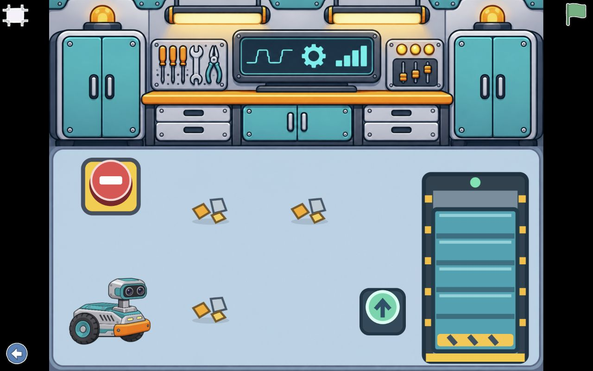
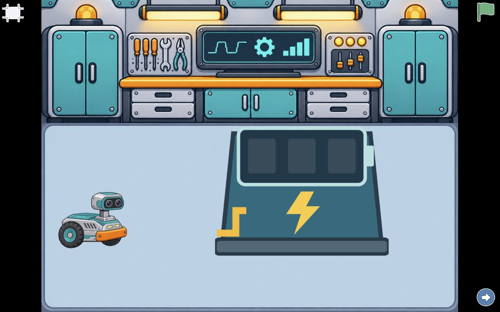

5-17 min
1. Încărcarea
Cele trei segmente se aprind succesiv. Robotul așteaptă ultimul segment înainte să plece.
Lecția 06 · 60 de minute · robotică pe ecran
Dimineața, robotul trebuie să se încarce, să adune resturile de pe podea și să deschidă accesul. La final, un singur steag pornește întreaga misiune.
Proiect de pornire fără cod · SJR
Plan + toate programele cu capturi · PDF · Ghidul profesorului

Primele 5 minute: povestea și citirea scenelor. Ultimele 3 minute: probă și salvare. Între ele, fiecare activitate produce un rezultat vizibil.
5-17 min
Cele trei segmente se aprind succesiv. Robotul așteaptă ultimul segment înainte să plece.
17-32 min
Fiecare rest dispare numai la contact cu robotul. Un rest mutat în afara traseului rămâne pe podea.
32-39 min
După curățenie, robotul acționează butonul verde. Așteaptă ridicarea completă a ușii, apoi intră.
39-47 min · dificil · pentru toți
Legăm cele două scene. Un singur steag pentru încărcare, curățenie și acces, fără intervenții suplimentare.
47-57 min · creație
Alte poziții ale resturilor, alt traseu. Păstrăm încărcarea și așteptarea ușii.
Rezervă · +5 min
Curățăm aceleași resturi cu 14 pași în loc de 16. Verificăm contactul și sosirea la ușă.
Rezervă · +10 min
Butonul roșu oprește robotul și ușa. Probăm și întreruperea ușii în timpul ridicării.
Stația și segmentele sunt personaje separate. Robotul așteaptă terminarea operației înainte să treacă în atelier.

PDF-ul are 25 de pagini: un plan concis, pregătirea și capturi reale ale tuturor programelor. Misiunea completă, creația și ambele rezerve includ și firele neschimbate.
Ghid complet · PDF cu capturi · Lista proiectelor · PDF-ul cursului
Pe laptop, în ScratchJr Desktop Reborn: Open în galerie, alegi SJR-ul și deschizi cardul „Pregătim atelierul”. Stop dacă rulează, scena dorită, Reset Characters, apoi un steag. Misiunea completă începe din scena 1.
Pe tablete pregătești numai starterul, înaintea orei. Segmentele sunt ascunse inițial, dar apar în lista personajelor. Instrucțiuni pentru import și proba pe Lenovo.
Opt fișiere importate și 14 probe în browser: ordinea încărcării, colectarea la contact, așteptarea ușii, traseul economic, două opriri de urgență, resetarea și redeschiderea. Raport și dovezi.
Verificarea nu include un Lenovo fizic. Portul web raportează o eroare la biblioteca globală de imagini; imaginile din proiecte s-au păstrat. Starterul conține toate resursele necesare.